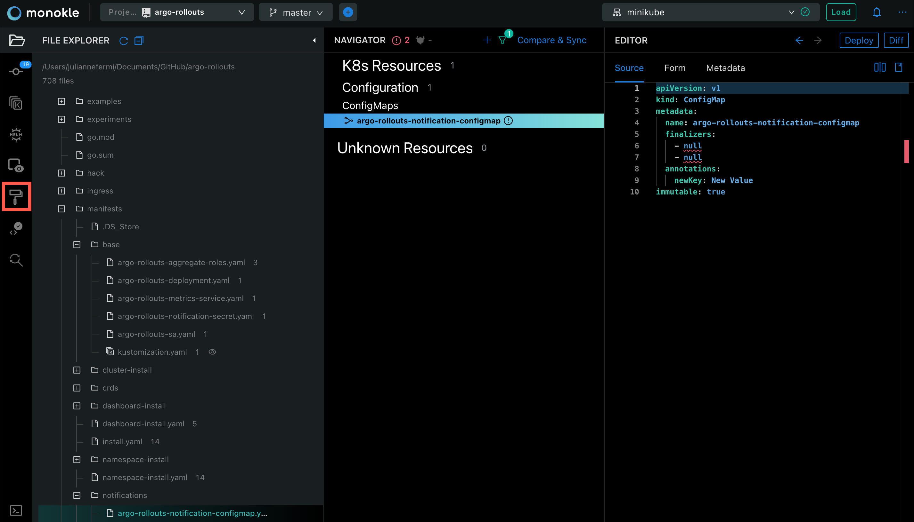
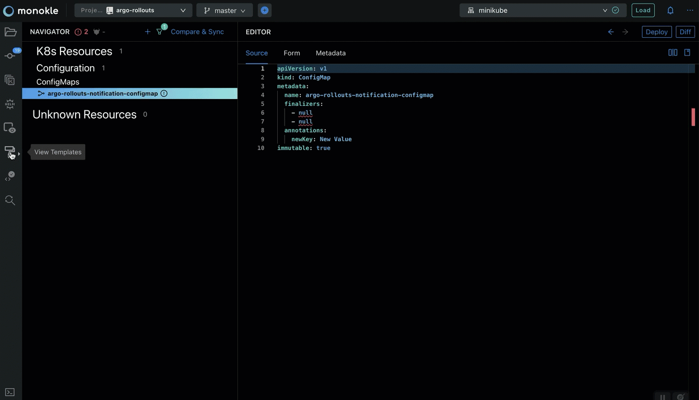

What is a Monokle Desktop Template?
A Monokle Desktop Template is a mechanism for creating visual forms and interpolating the data from those forms into one or multiple manifests.
For each form, we must define the JSON schema of the data to use as an input and a UI-schema for customizing the visuals of the forms (for example, specifying which widgets should be used).
Monokle Desktop uses the React-Schema-Form component to render template forms for the provided schemas, read more in their documentation on how to further work with forms, schemas and ui-schemas.
Any folder that contains a monokle-template.json file can be a template.
What is the structure of monokle-template.json for a valid Monokle Desktop Template?
Here’s an example of a template that creates a Pod: https://github.com/kubeshop/monokle-default-templates-plugin/blob/main/basic-pod-template/monokle-template.json
{
"name": "Basic Kubernetes Pod",
"id": "io.kubeshop.monokle.templates.default.basic-pod-template",
"author": "kubeshop.io",
"version": "1.0.0",
"description": "Creates a Pod for a specified Image",
"repository": "",
"type": "vanilla",
"forms": [
{
"name": "Pod Settings",
"description": "Specify the Image to use",
"schema": "form-schema.json",
"uiSchema": "form-ui-schema.json"
}
],
"manifests": [
{
"filePath": "template.yaml"
}
],
"resultMessage": "Pod resource created successfully!",
"helpUrl": "https://github.com/kubeshop/monokle-default-templates-plugin"
}
The name, id, author, version, description, type and forms properties are required. All types of templates have these properties.
In the above example, the type of the template is "vanilla".
What does a form schema look like?
The format of form schemas is JSON schema. This defines which data that will be sent to the template manifests.
{
"type": "object",
"required": ["name", "image"],
"properties": {
"name": {
"type": "string",
"default": "my-pod"
},
"namespace": {
"type": "string"
},
"image": {
"type": "string"
}
}
}
What does a form UI schema look like?
Example:
{
"name": {
"ui:title": "Name",
"ui:help": "The name of the Pod"
},
"namespace": {
"ui:title": "Namespace",
"ui:help": "The target namespace for the Pod",
"ui:widget": "namespaceSelection"
},
"image": {
"ui:title": "Image",
"ui:help": "The image name to use for the Pod, for example nginx-ingress:latest"
}
}
The role of this form is to specify information about how to render the form - read more about ui-schemas in the UI-Schema Documentation
Custom Form Widgets
Monokle Desktop provides a number of custom form widgets to provide a better user experience:
namespaceSelection: Shows a dropdown with all namespaces in the current set of resources.imageSelection: Shows a dropdown with all the images found in the current set of resources.apiGroupSelection: Shows a dropdown with all apiGroups known by Monokle Desktop.podSelectSelection: Shows a dropdown with all labels assigned to any pods or pod-specs in the current set of resources.resourceSelection: Shows a dropdown with resource names from the current set of resources. This can be narrowed down by adding a ui:options.resourceKinds property containing a |-separated string of desired resourceKinds.
For example:
{
"targetClusterRole": {
"ui:title": "Target ClusterRole",
"ui:help": "The ClusterRole to bind to the created ServiceAccount",
"ui:widget": "resourceSelection",
"ui:options": {
"resourceKinds": "ClusterRole"
}
}
}
All these widgets allow entry of custom values - i.e. none require you to select a known value.
Property Interpolation
Monokle Desktop uses [[ and ]] as escape delimiters for script interpolation.
For the JSON Schema example above example, if this form is the first one in the forms array
from monokle-template.json, then we will be able to use the values in the template manifests:
propertyOne: [[forms[0].name]]
propertyTwo: [[forms[0].namespace]]
otherProperty: [[forms[0].image]]
Scripts are run in a sandboxed environment giving you access to built-in Javascript objects. For example the following is taken from the basic-role-template which will create a YAML array of selected verbs in the corresponding form.
verbs:
- [[ forms[0].verbs.join("\n - ") ]]
What types of templates exist?
Monokle Desktop has vanilla templates and referenced Helm Chart templates.
Vanilla Templates
The type property from monokle-template.json is "vanilla".
In vanilla templates, we must provide the manifests that will be generated as an output. For example, here is a simple template manifest example:
deployment.yaml
apiVersion: apps/v1
metadata:
kind: Deployment
name: [[forms[0].name]]
The [[forms[0].name]] parameter will be interpolated based on the input received from the form.
In this specific example, the value of the name property from the first form will be inserted.
Using the manifests property from the monokle-template file, specify the above template manifest like this:
{
"manifests": [
{
"filePath": "deployment.yaml"
}
]
}
Referenced Helm Chart Templates
The value of the type property from monokle-template.json is "helm-chart".
Example of monokle-template.json:
{
"name": "Minecraft Server (Test Plugin)",
"id": "com.github.devcatalin.monokle-test-plugin.minecraft",
"author": "Catalin",
"version": "1.0.1",
"description": "Create your own Minecraft server",
"type": "helm-chart",
"forms": [
{
"name": "Minecraft Server",
"description": "Default settings for your Minecraft Server",
"schema": "form-schema.json",
"uiSchema": "form-ui-schema.json"
}
],
"valuesFilePath": "values.yaml",
"chartName": "minecraft",
"chartVersion": "3.6.1",
"chartRepo": "https://itzg.github.io/minecraft-server-charts/",
"helpUrl": "https://artifacthub.io/packages/helm/minecraft-server-charts/minecraft"
}
In this example, we can see the first part of the file looks similar to the vanilla templates. However, for Helm chart templates we do not specify a manifests array, we specify information about the chart.
The properties chartName, chartVersion, chartRepo are required to identify the helm chart.
This type of template must bundle a values.yaml file that can contain properties that will be interpolated with values from the forms.
For example, we could have the following values.yaml in the template folder:
values.yaml
version: [[forms[0].version]]
maxPlayers: [[forms[0].maxPlayers]]
In the monokle-template.json example from above, we notice a valuesFilePath that specifies the path to the values file. This file will be interpolated with values from the forms and used by Helm to generate the output resources.
How do I install a Template?
Templates can be installed via Plugins.
Read the How to install a Plugin section from Plugins Overview.
Note: A plugin can contain one or multiple templates.
Default Monokle Desktop Templates
Monokle Desktop includes a default set of templates which are installed automatically when starting Monokle Desktop for the first time and available in the Templates Explorer when working with your Monokle Desktop projects.
Click on the View Templates icon to view the included templates:


Check out the Monokle Desktop Default Templates Plugin repository to see which templates are included and their corresponding schemas and manifests.